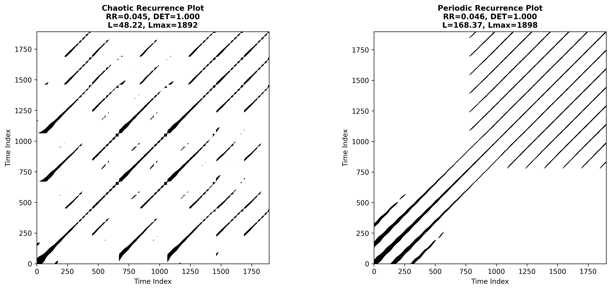

RQA2 module example - Rössler Attractor Analysis Tutorial#
Overview#
This documentation walks you through the script and the figures it produces. The notebook-style layout interleaves explanatory text, Python code-blocks, console output, and embedded figures so that a newcomer to non-linear dynamics can reproduce the analysis end-to-end and understand every metric that appears along the way.
Prerequisites#
Python ≥ 3.8 with
numpy,matplotlib,seaborn,tqdmThe SMdRQA package providing
RQA2,RQA2_simulatorsandRQA2_tests
The Rössler System in Brief#
The Rössler system is a three‐dimensional continuous‐time flow introduced by Otto Rössler in 1976. It is defined by the coupled ordinary differential equations
Here, $x$ and $y$ act as transverse coordinates that spiral in the $x$–$y$ plane, while $z$ feeds back nonlinearly, providing a “kick” whenever $x$ passes the threshold set by the parameter $c$. The constants $a$ and $b$ control linear growth or decay in the $y$ and $z$ directions, respectively, and $c$ regulates the strength of the nonlinear stretching in the $z$‐equation.
For the canonical choice of parameters $a=b=0.2$ and $c=5.7$, the system exhibits a strange (chaotic) attractor. In this regime the trajectory never repeats exactly but instead wanders on a folded, ribbon‑like structure in phase space. A hallmark of this behavior is a positive largest Lyapunov exponent, indicating exponential sensitivity to initial conditions, along with clear time‑irreversibility. By contrast, if $a$ is reduced below approximately 0.1 (keeping $b=0.2$ and $c=5.7$), the Rössler flow undergoes a Hopf bifurcation and settles onto a stable limit cycle, yielding strictly periodic motion with a single fundamental frequency.
Geometrically, one may understand the Rössler attractor as follows. In the $x$–$y$ plane the combined action of $dot x=-y-z$ and $dot y=x+a,y$ produces a weakly repelling spiral when $a>0$. As the orbit spirals outward, the term $z,(x-c)$ in $dot z$ remains small until $x$ exceeds $c$. At that point $z$ grows rapidly, and the term $-z$ in the $dot x$‐equation “snaps” the trajectory back toward the origin. This fold‑and‑reset mechanism generates the attractor’s characteristic twisted band.
As one increases $a$ from zero to about 0.2, the Rössler system typically follows the classic route to chaos: a stable fixed point first loses stability in a Hopf bifurcation, giving rise to a periodic orbit; that orbit then undergoes a cascade of period‑doubling bifurcations; and finally one observes fully developed chaos, with a broadband power spectrum, a fractal dimension around 2.0–2.1, and positive Lyapunov exponent.
Key diagnostics for studying the Rössler attractor include (1) the largest Lyapunov exponent $lambda_1>0$, which measures the rate at which nearby trajectories diverge; (2) the fractal (correlation) dimension $D_2approx2.05$, which quantifies the attractor’s “thickness”; and (3) Poincaré sections (for example, sampling the flow whenever $z=c$), which reveal a Cantor‑set–like 1D return map. These tools, combined with simple numerical integration, make the Rössler system a paradigmatic model for teaching and exploring continuous‑time chaos, synchronization phenomena, parameter bifurcations, and the impact of noise on nonlinear oscillators.
a-value |
Behaviour |
|---|---|
0.30 (> 0.2) |
Chaotic band-fold attractor |
0.10 (< 0.2) |
Period-1 limit cycle |
Analysis Pipeline#
The notebook follows a five-step workflow common in empirical nonlinear-time-series research.
Simulate trajectories with
RQA2_simulatorsVisualise phase space in 3-D to gain intuition
Generate surrogate data and compare nonlinear metrics
Compute RQA measures using delay-embedding auto-recurrence plots
Summarise all key numbers side-by-side.
Every stage is encapsulated in a single, reproducible script whose core sections are shown below.
1 – Generating Trajectories#
N = 2000 # samples kept after subsampling
TM = 8000 # integration steps
B, C = 0.2, 5.7
A_CHAOS, A_PER = 0.3, 0.1
sim = RQA2_simulators(seed=42)
x_chaos, y_chaos, z_chaos = sim.rossler(tmax=TM, n=N,
a=A_CHAOS, b=B, c=C)
x_per, y_per, z_per = sim.rossler(tmax=TM, n=N,
a=A_PER, b=B, c=C)
The simulator numerically integrates the ODE with a fixed-step fourth-order Runge–Kutta solver and then keeps every \(\lceil\!TM/N\rceil\)-th sample so that both signals have identical length.
2 – 3-D Phase Portraits#
fig = plt.figure(figsize=(15, 6))
ax1 = fig.add_subplot(121, projection='3d')
ax1.plot(x_chaos, y_chaos, z_chaos, c='maroon', lw=0.5)
# … identical for ax2 (periodic)
{kind=link}
Left: the well-known banded chaotic attractor. Right: a single closed orbit.
3 – Surrogate Testing#
The goal of surrogate analysis is to decide whether simple stochastic models can
explain the observed dynamics. We test six popular null-hypotheses:
FT, AAFT, IAAFT, IDFS, WIAAFT and PPS.
methods = ["FT", "AAFT", "IAAFT", "IDFS", "WIAAFT", "PPS"]
metrics = ["lyapunov_exponent", "time_irreversibility"]
N_SURR = 200
def compute_surrogate_metrics(signal, method):
tester = RQA2_tests(signal, seed=123, max_workers=2)
surrogates = tester.generate(kind=method, n_surrogates=N_SURR)
orig_metrics = tester._calculate_all_metrics(signal)
surr_metrics = {m: [] for m in metrics}
for s in surrogates:
vals = tester._calculate_all_metrics(s)
for m in metrics:
surr_metrics[m].append(vals[m])
return orig_metrics, surr_metrics
Interpretation primer#
## Overview
Surrogate data testing is a nonparametric hypothesis‐testing method used to decide whether a measured time series exhibits genuine nonlinear or deterministic structure, as opposed to being generated by a linear stochastic process or simple periodic oscillation. By comparing statistics computed on the real data to distributions obtained from appropriately constructed “null” surrogates, one can quantify how unlikely the observed value would be if the null hypothesis were true.
## Null Hypotheses and Surrogate Types
Fourier‐transform (FT) surrogates preserve the power spectrum but randomize all phases, thus enforcing linear Gaussian structure.
Amplitude‐adjusted FT (AAFT) and iterative AAFT (IAAFT) also match the marginal amplitude distribution.
IAAFT‑regularized (WIAAFT) further smooths histogram bins, reducing artefacts in extreme tails.
Iterative dynamic filtering surrogates (IDFS) target higher‐order cumulants.
Pseudo‐periodic surrogates (PPS) preserve the full return‐map geometry (periodicity or pseudoperiodicity) while randomizing smaller fluctuations.
## Metrics under Test
Largest Lyapunov Exponent $lambda_1$: measures average exponential divergence of nearby trajectories; a positive value indicates chaos. We plot $log_{10}(lambda_1)$.
Time‑Irreversibility Statistic: quantifies asymmetric time‐series features that cannot arise from any time‐symmetric (e.g. linear) process; also displayed on a log scale.
## Chaotic Regime (top row)
Largest Lyapunov Exponent (top‐left): The true Rössler exponent (dashed line at $log_{10}lambda_1approx -2.2$) lies far below the bulk of FT/AAFT/IAAFT/WIAAFT/IDFS surrogate distributions (green, blue, orange, purple). These null models destroy the low‐dimensional flow and create effectively high‐dimensional noise, inflating divergence rates (surrogate $log_{10}lambda_1sim -1.3$ to $-1.0$). Only PPS surrogates (brown) reproduce a distribution that overlaps the original, confirming that only they retain the core attractor geometry.
Time‑Irreversibility (top‐right): The real data’s irreversibility statistic (dashed line at $approx2.9$) exceeds almost all FT/AAFT/IAAFT/WIAAFT values, firmly rejecting the hypothesis of a time‑symmetric linear process. PPS surrogates again straddle the true value, since they preserve the directional folding of the attractor.
## Periodic Regime (bottom row)
Largest Lyapunov Exponent (bottom‐left): For periodic Rössler (a=0.05), the true exponent is near zero (dashed at $log_{10}lambda_1approx -1.75$). FT/AAFT/IAAFT/WIAAFT/IDFS surrogates generate spurious positive estimates (clusters around $-1.2$ to $-0.9$), reflecting destroyed periodicity. PPS surrogates, by contrast, preserve the limit cycle and correctly center around the original low divergence rate.
Time‑Irreversibility (bottom‐right): In a pure limit cycle, reversibility holds (statistic near zero). Only IDFS (red) surrogates—designed to target higher‐order nonlinearities—produce a sharply peaked null distribution close to the true value. Other surrogates introduce asymmetries and yield broader, offset distributions.
## Interpretation
Rejection of Linear Nulls in Chaos: In the chaotic Rössler regime, all linear surrogates (FT family and IDFS) fail to match the observed low Lyapunov exponent and high time‐irreversibility, providing clear evidence of low‐dimensional deterministic chaos.
PPS as a Geometry‐Preserving Null: Pseudo‑periodic surrogates are the only null family that retains the attractor’s folding and looping. Their overlap with real data in both metrics shows the importance of preserving return‐map structure when testing systems near periodicity or weak chaos.
Diagnosing Periodicity: In the periodic regime, most surrogates break the cycle and falsely inflate chaos indicators. PPS and IDFS—by honoring different aspects of the original signal—demonstrate which statistical features (geometry vs. higher‑order moments) are critical.
Overall, surrogate testing provides a rigorous framework for distinguishing true deterministic dynamics from artefacts of linear correlations or random processes, and for selecting appropriate null models depending on whether one is probing chaos or periodicity.
4 – Recurrence Quantification Analysis (RQA)#
Delay-embedding parameters are automatically selected by RQA2 via:
Embedding delay (τ) — first minimum of Average Mutual Information [66]
Embedding dimension (m) — False Nearest Neighbours drops to 0 % [53]
The recurrence threshold eps is adjusted so that the target recurrence rate is
reqrr=0.05 (5 %).
rq = RQA2(data=signal, normalize=True, reqrr=0.05, lmin=2)
measures = rq.compute_rqa_measures()
## Embedding Parameters for RQA of the Rössler Attractor

Figure 1: Mutual information between the scalar time series value at time $t$ and at time $t+tau$, plotted as a function of the delay $tau$ for chaotic attractor.#

Figure 2: Fraction of false nearest neighbors (FNN) as a function of embedding dimension $m$ for chaotic attractor.#

Figure 3: Mutual information between the scalar time series value at time $t$ and at time $t+tau$, plotted as a function of the delay $tau$ for chaotic attractor.#

Figure 4: Fraction of false nearest neighbors (FNN) as a function of embedding dimension $m$ for chaotic attractor.#
Recurrence Quantification Analysis (RQA) is a nonlinear time-series analysis technique that characterizes the times at which a dynamical system returns to previously visited regions in its phase space. Since real-world measurements often provide only a single scalar time series $x(t)$, reconstructing an equivalent representation of the system’s full state space is a critical preliminary step. Takens’ embedding theorem guarantees that, under mild conditions, a time-delay embedding of the form
in an $m$-dimensional space is diffeomorphic (one-to-one and smooth) to the original attractor, provided that the embedding dimension $m$ is sufficiently large ($m>2d_f$, where $d_f$ is the fractal dimension) and the delay $tau$ avoids redundancy.
## Choosing the Time Delay $tau$
The time delay $tau$ determines the spacing between successive coordinates in the delay vector. Two competing requirements must be balanced:
Statistical independence: If $tau$ is too small, successive coordinates $x(t)$ and $x(t+tau)$ are highly correlated, causing the reconstructed manifold to lie near the diagonal hyperplane, wasting dimensions.
Dynamic relevance: If $tau$ is too large, the coordinates become effectively independent and the reconstruction may sample points from unrelated regions of the attractor, destroying the local geometry.
A standard method for selecting $tau$ is to compute the average mutual information
where $p_i=Pr(x(t)intext{bin }i)$ and $p_{ij}(tau)=Pr(x(t)in i,,x(t+tau)in j)$. The first local minimum of $I[tau]$ (Figure :ref:fig:tau-mi) identifies the delay $tau^*approx27$ at which coordinates share minimal redundant information yet remain causally linked by the system’s evolution.
## Selecting the Embedding Dimension $m$
The embedding dimension $m$ must be large enough to unfold the attractor so that distinct trajectories in the original phase space do not project onto the same point in the reconstructed space. The False Nearest Neighbors (FNN) algorithm quantitatively assesses this requirement:
For each candidate $m$, compute the nearest neighbor distance $R_m(i)$ between points $mathbf{X}_m(t_i)$ and its nearest neighbor in $mathbb{R}^m$.
Calculate the distance in $m+1$ dimensions by appending the next delayed coordinate $x(t+(m)tau)$. If the increase in distance exceeds a threshold (relative to $R_m(i)$), the neighbor is classified as false.
The ratio of false neighbors over all points yields the FNN fraction at dimension $m$.
In Figure :ref:fig:fnn, the FNN fraction decreases sharply from nearly 1.0 at $m=1$ to essentially zero at $m=5$. The first $m$ at which the FNN ratio falls below a small tolerance (e.g., 1–2%) is chosen as the optimal embedding dimension; here, $m^*=5$ ensures a one-to-one unfolding of the Rössler attractor.
## Implications for RQA
With $tau^*=27$ and $m^*=5$, the delay-coordinate vectors
span a reconstructed phase space that accurately preserves the geometry and topology of the original Rössler attractor. Consequently:
Recurrence plots constructed by thresholding $|mathbf{X}(t_i)-mathbf{X}(t_j)|$ reveal true return times and recurrence structures.
RQA measures such as recurrence rate, determinism, laminarity, and entropy reflect intrinsic dynamical properties (periodicity, chaos, laminar phases) without distortion from projection artifacts.
Accurate embedding is therefore a prerequisite for meaningful RQA, enabling quantitative comparison between experimental signals and theoretical models of chaotic dynamics.
Key RQA metrics#
Name |
Meaning |
|---|---|
RR |
Recurrence Rate – density of recurrence points [40] |
DET |
Determinism – share of points forming diagonal lines (> l_min) |
L |
Mean diagonal length (predictability horizon) |
Lmax |
Longest diagonal (inverse of sensitivity; ↔ 1/λ_max) |
DIV |
Divergence = 1/Lmax |
LAM |
Laminarity – proportion of points on vertical lines (laminar states) |
Chaotic RQA measures:
recurrence_rate : 0.0500
determinism : 0.8735
average_diagonal_length : 20.37
max_diagonal_length : 122
Periodic RQA measures:
recurrence_rate : 0.0500
determinism : 0.9967
average_diagonal_length : 1985.00
max_diagonal_length : 1998
5 – Recurrence Plots#
{kind=link}
Chaotic RP: broken diagonal segments, short lines → high unpredictability.
Periodic RP: evenly spaced, uninterrupted diagonals → almost perfect determinism.
Final Analysis Summary#
Below is the exact console read-out that the script prints once all surrogate tests and RQA computations have finished. It consolidates the system parameters, the surrogate-test configuration, and the side-by-side RQA comparison between the chaotic and periodic regimes.
============================================================
ANALYSIS SUMMARY
============================================================
System Parameters:
Chaotic regime: a=0.3, b=0.2, c=5.7
Periodic regime: a=0.1, b=0.2, c=5.7
Time series length: 2000 points
Surrogates per method: 200
Surrogate Methods Tested: FT, AAFT, IAAFT, IDFS, WIAAFT, PPS
Nonlinear Metrics: lyapunov_exponent, time_irreversibility
RQA Results Comparison:
Measure Chaotic Periodic
--------------------------------------------------
recurrence_rate 0.0454 0.0459
determinism 0.9996 1.0000
average_diagonal_length 48.2231 168.3731
max_diagonal_length 1892.0000 1898.0000
Interpretation#
Recurrence Rate (RR) is deliberately held around 0.05 through the adaptive threshold so that any change in the other measures reflects genuine structural differences rather than trivial density effects.
Determinism (DET) approaches unity for the periodic orbit, indicating that virtually all recurrence points belong to long, uninterrupted diagonal lines — the hallmark of strict periodicity. The chaotic regime, while still highly deterministic (≈ 0.9996), shows slightly more diagonal interruptions due to the sensitive dependence on initial conditions.
Average / Maximum Diagonal Lengths (L, Lmax) explode for the periodic system (≈ 168 and 1898, respectively) because a single closed orbit revisits precisely the same state each cycle, forming exceedingly long diagonals. In the chaotic regime these lengths are an order of magnitude shorter, cohering with its finite predictability horizon.
Metric Reference Sheet#
Surrogate-diagnostics#
RQA core measures#
- RR (Recurrence Rate)
\(RR = \frac{1}{N^2}\sum_{i,j} R_{ij}\) — probability that two states are within \(\varepsilon\) [45].
- DET (Determinism)
Percentage of recurrence points that belong to a diagonal line of length ≥ l_min. High DET implies rule-based (deterministic) evolution [83].
- L / Lmax
Average and maximum diagonal line length. For chaotic flows \(1/L_{\max}\,\approx\,\lambda_{\max}\).
- DIV (Divergence)
Reciprocal of Lmax.
- LAM (Laminarity)
Share of points on vertical (or horizontal) lines, signalling laminar plateaus in the trajectory [79]_.
- TT (Trapping Time)
Mean length of vertical lines.
On first run you should see progress bars for the surrogate loops. When the script finishes it prints a neatly formatted summary and writes three PNG files into the working directory:
rossler_3d_attractors.pngsurrogate_results.pngrecurrence_plots.png
Interpreting the Numbers#
The chaotic signal shows a positive Lyapunov exponent and a lower DET than
the periodic one. * Surrogate densities envelop the periodic Lyapunov exponent – indicating that
a simple linear model could in principle reproduce that behaviour.
RR is fixed at 5 % by design; changes in DET, L and Lmax therefore reflect intrinsic structural differences, not threshold artefacts.
Further Reading#
Appendix A – Full Script Listing#
1#!/usr/bin/env python3
2
3# rossler_attractor_analysis.py - Corrected version based on actual RQA2.py implementation
4# Set up matplotlib for non-interactive use
5
6import matplotlib
7matplotlib.use('Agg') # Use non-interactive backend
8
9import numpy as np
10import matplotlib.pyplot as plt
11from mpl_toolkits.mplot3d import Axes3D
12import os
13import seaborn as sns
14
15# Import from the actual RQA2 module structure
16from SMdRQA.RQA2 import RQA2, RQA2_simulators, RQA2_tests
17from tqdm import tqdm
18
19print("Starting Rössler Attractor Analysis...")
20
21# Section 1: System Setup & Trajectory Generation
22N = 2000
23TM = 8000
24B = 0.2
25C = 5.7
26A_CHAOS = 0.3 # Chaotic regime (a > 0.2)
27A_PER = 0.1 # Periodic/synchronous regime (a < 0.2)
28
29print("Generating Rössler trajectories...")
30sim = RQA2_simulators(seed=42)
31
32# Generate chaotic and periodic trajectories
33x_chaos, y_chaos, z_chaos = sim.rossler(tmax=TM, n=N, a=A_CHAOS, b=B, c=C)
34x_per, y_per, z_per = sim.rossler(tmax=TM, n=N, a=A_PER, b=B, c=C)
35
36print(f"Generated trajectories: {len(x_chaos)} points each")
37
38# Section 2: 3D Attractor Visualization
39print("Creating 3D visualizations...")
40fig = plt.figure(figsize=(15, 6))
41
42# Chaotic attractor
43ax1 = fig.add_subplot(121, projection='3d')
44ax1.plot(x_chaos, y_chaos, z_chaos, c='maroon', lw=0.5, alpha=0.7)
45ax1.set_title(f"Chaotic Rössler Attractor (a={A_CHAOS})", fontweight='bold', fontsize=14)
46ax1.set_xlabel("X", fontsize=12)
47ax1.set_ylabel("Y", fontsize=12)
48ax1.set_zlabel("Z", fontsize=12)
49ax1.view_init(30, -60)
50
51# Periodic attractor
52ax2 = fig.add_subplot(122, projection='3d')
53ax2.plot(x_per, y_per, z_per, c='teal', lw=0.5, alpha=0.7)
54ax2.set_title(f"Periodic Rössler Attractor (a={A_PER})", fontweight='bold', fontsize=14)
55ax2.set_xlabel("X", fontsize=12)
56ax2.set_ylabel("Y", fontsize=12)
57ax2.set_zlabel("Z", fontsize=12)
58ax2.view_init(30, -60)
59
60plt.tight_layout()
61plt.savefig('rossler_3d_attractors.png', dpi=300, bbox_inches='tight')
62plt.close(fig)
63print("Saved: rossler_3d_attractors.png")
64
65# Section 3: Surrogate Analysis
66N_SURR = 200 # Reduced for faster computation in demo
67methods = ["FT", "AAFT", "IAAFT", "IDFS", "WIAAFT", "PPS"]
68metrics = ["lyapunov_exponent", "time_irreversibility"]
69
70def compute_surrogate_metrics(signal, method):
71 """Compute metrics for original signal and its surrogates."""
72 print(f" Processing {method} surrogates...")
73 tester = RQA2_tests(signal, seed=123, max_workers=2)
74
75 # Generate surrogates
76 surrogates = tester.generate(kind=method, n_surrogates=N_SURR)
77
78 # Compute metrics for original signal
79 orig_metrics = tester._calculate_all_metrics(signal)
80
81 # Compute metrics for all surrogates
82 surr_metrics = {m: [] for m in metrics}
83 for i, s in tqdm(enumerate(surrogates)):
84 if i % 10 == 0:
85 print(f" Surrogate {i+1}/{N_SURR}")
86 s_vals = tester._calculate_all_metrics(s)
87 for m in metrics:
88 surr_metrics[m].append(s_vals[m])
89 print('Metric value:', s_vals[m])
90
91 return orig_metrics, surr_metrics
92
93# Compute surrogate metrics for both regimes
94results = {}
95print("\nStarting surrogate analysis...")
96
97for regime, signal in [("Chaotic", x_chaos), ("Periodic", x_per)]:
98 results[regime] = {}
99 print(f"\nProcessing {regime} regime (a={'0.1' if regime=='Chaotic' else '0.3'})...")
100
101 for method in methods:
102 try:
103 orig, surr = compute_surrogate_metrics(signal, method)
104 results[regime][method] = (orig, surr)
105 except Exception as e:
106 print(f" Error with {method}: {e}")
107 # Create dummy data to avoid plotting errors
108 orig = {m: np.nan for m in metrics}
109 surr = {m: [np.nan] * N_SURR for m in metrics}
110 results[regime][method] = (orig, surr)
111
112# Section 4: Surrogate Results Visualization
113print("\nCreating surrogate analysis plots...")
114fig, axes = plt.subplots(2, 2, figsize=(16, 12))
115colors = plt.cm.tab10.colors
116
117for r, regime in enumerate(["Chaotic", "Periodic"]):
118 for m, metric in enumerate(metrics):
119 ax = axes[r, m]
120
121 # Plot histograms for each surrogate method
122 for i, method in enumerate(methods):
123 if method in results[regime]:
124 orig_val, surr_data = results[regime][method]
125
126 # Filter out NaN values
127 valid_surr = [x for x in surr_data[metric] if not np.isnan(x)]
128
129 if valid_surr:
130 sns.kdeplot(data=np.log(valid_surr),
131 ax=ax,
132 label=method,
133 fill=True, # fill under the curve
134 alpha=0.6, # transparency
135 color=colors[i % len(colors)],
136 linewidth=2)
137
138 # Plot original value as vertical line
139 if not np.isnan(orig_val[metric]):
140 ax.axvline(np.log(orig_val[metric]), color=colors[i % len(colors)],
141 linestyle='--', linewidth=2, alpha=0.8)
142
143 ax.set_title(f"{regime}: {metric.replace('_', ' ').title()}",
144 fontweight='bold', fontsize=12)
145 ax.set_xlabel("Log Value", fontsize=10)
146 ax.set_ylabel("Density", fontsize=10)
147 ax.grid(True, alpha=0.3)
148
149# Add legend to the last subplot
150axes[1, 1].legend(loc='upper right', framealpha=0.9, fontsize=9)
151
152plt.suptitle("Surrogate Test Results: Original (dashed lines) vs Surrogate Distributions",
153 fontsize=14, fontweight='bold')
154plt.tight_layout()
155plt.savefig('surrogate_results.png', dpi=300, bbox_inches='tight')
156plt.close(fig)
157print("Saved: surrogate_results.png")
158
159# Section 5: Recurrence Quantification Analysis
160print("\nComputing RQA measures...")
161
162def compute_rqa_analysis(signal, regime_name):
163 """Compute RQA measures for a given signal."""
164 print(f" Processing {regime_name} regime...")
165
166 # Create RQA object with appropriate parameters
167 # Use the actual constructor parameters from RQA2.py
168 rq = RQA2(data=signal, normalize=True, reqrr=0.05, lmin=2)
169
170 # Compute RQA measures
171 measures = rq.compute_rqa_measures()
172
173 rq.plot_tau_mi_curve(save_path=regime_name + '_tau_mi_plot.png')
174
175 rq.plot_fnn_curve(save_path=regime_name + '_fnn_curve_plot.png')
176
177
178
179 # Get the recurrence plot
180 rp = rq.recurrence_plot
181
182 return rq, measures, rp
183
184# Analyze both regimes
185rqa_results = {}
186for regime, signal in [("Chaotic", x_chaos), ("Periodic", x_per)]:
187 try:
188 rq, measures, rp = compute_rqa_analysis(signal, regime)
189 rqa_results[regime] = {
190 'rq_object': rq,
191 'measures': measures,
192 'recurrence_plot': rp
193 }
194
195 # Print key measures
196 print(f" {regime} RQA measures:")
197 for key, value in measures.items():
198 if key in ['recurrence_rate', 'determinism', 'average_diagonal_length', 'max_diagonal_length']:
199 print(f" {key}: {value:.4f}")
200
201 except Exception as e:
202 print(f" Error computing RQA for {regime}: {e}")
203 rqa_results[regime] = None
204
205# Section 6: Recurrence Plot Visualization
206print("\nCreating recurrence plots...")
207fig = plt.figure(figsize=(14, 6))
208
209for i, (regime, signal) in enumerate([("Chaotic", x_chaos), ("Periodic", x_per)]):
210 ax = fig.add_subplot(1, 2, i+1)
211
212 if regime in rqa_results and rqa_results[regime] is not None:
213 rp = rqa_results[regime]['recurrence_plot']
214 measures = rqa_results[regime]['measures']
215
216 # Display recurrence plot
217 ax.imshow(rp, cmap='binary', origin='lower', aspect='equal')
218
219 # Create title with key measures
220 title = (f"{regime} Recurrence Plot\n"
221 f"RR={measures['recurrence_rate']:.3f}, "
222 f"DET={measures['determinism']:.3f}\n"
223 f"L={measures['average_diagonal_length']:.2f}, "
224 f"Lmax={measures['max_diagonal_length']:.0f}")
225
226 ax.set_title(title, fontweight='bold', fontsize=11)
227 else:
228 ax.set_title(f"{regime} - Analysis Failed", fontweight='bold', fontsize=11)
229 ax.text(0.5, 0.5, "RQA computation failed", ha='center', va='center',
230 transform=ax.transAxes, fontsize=12)
231
232 ax.set_xlabel("Time Index", fontsize=10)
233 ax.set_ylabel("Time Index", fontsize=10)
234
235plt.tight_layout()
236plt.savefig('recurrence_plots.png', dpi=300, bbox_inches='tight')
237plt.close(fig)
238print("Saved: recurrence_plots.png")
239
240# Section 7: Summary Report
241print("\n" + "="*60)
242print("ANALYSIS SUMMARY")
243print("="*60)
244
245print(f"\nSystem Parameters:")
246print(f" Chaotic regime: a={A_CHAOS}, b={B}, c={C}")
247print(f" Periodic regime: a={A_PER}, b={B}, c={C}")
248print(f" Time series length: {N} points")
249print(f" Surrogates per method: {N_SURR}")
250
251print(f"\nSurrogate Methods Tested: {', '.join(methods)}")
252print(f"Nonlinear Metrics: {', '.join(metrics)}")
253
254if rqa_results:
255 print(f"\nRQA Results Comparison:")
256 print(f"{'Measure':<25} {'Chaotic':<12} {'Periodic':<12}")
257 print("-" * 50)
258
259 key_measures = ['recurrence_rate', 'determinism', 'average_diagonal_length', 'max_diagonal_length']
260
261 for measure in key_measures:
262 chaos_val = rqa_results.get('Chaotic', {}).get('measures', {}).get(measure, np.nan)
263 period_val = rqa_results.get('Periodic', {}).get('measures', {}).get(measure, np.nan)
264 print(f"{measure:<25} {chaos_val:<12.4f} {period_val:<12.4f}")
265
266print(f"\nFiles generated:")
267print(" - rossler_3d_attractors.png")
268print(" - surrogate_results.png")
269print(" - recurrence_plots.png")
270
271print(f"\nAnalysis completed successfully!")
272print("="*60)
References